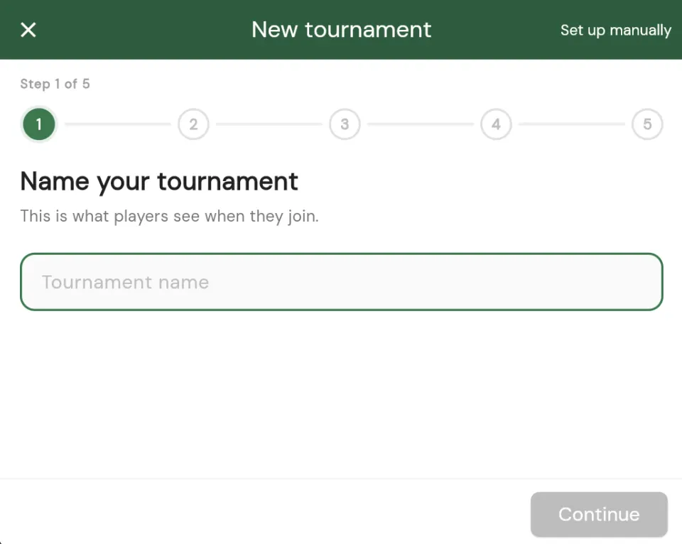
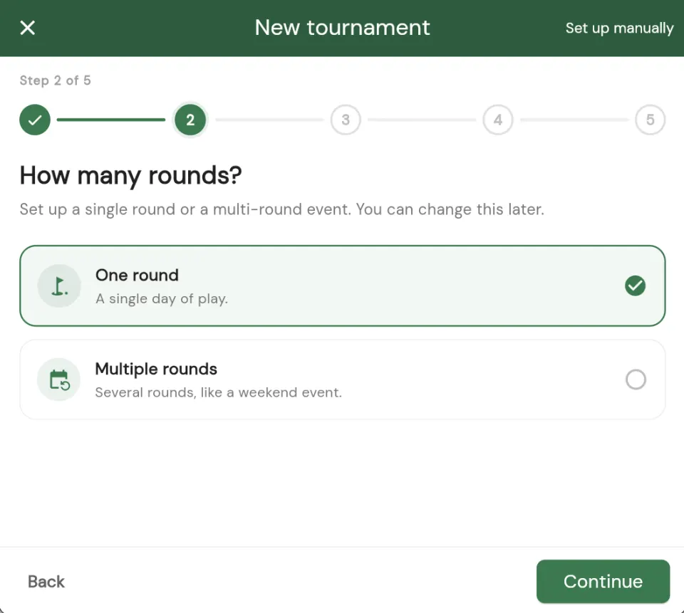
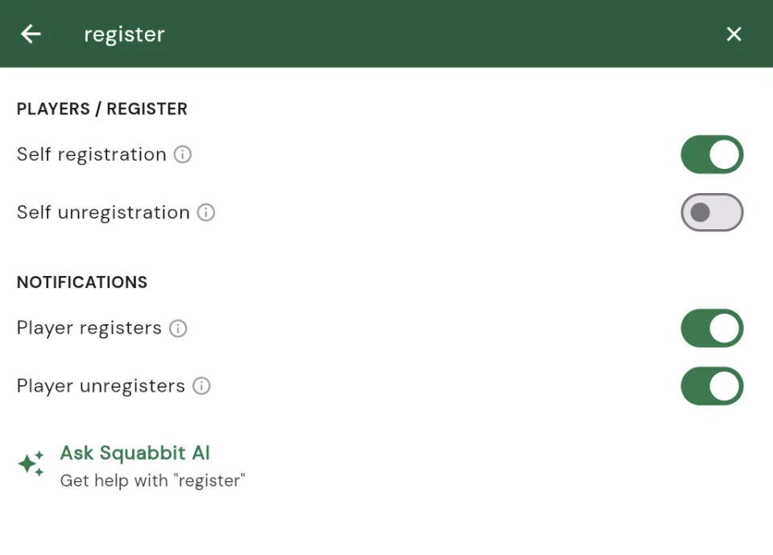

A faster way to create and run a tournament
Jul 21, 2026
Creating a tournament in Squabbit is now even easier. Instead of one settings page to work through, a guided step-by-step wizard walks you through the essentials, and once your event exists, its settings are organized into clear tabs with a search box that jumps you straight to whatever you need.

A wizard that walks you through setup
Creating a tournament is a series of small, focused steps. The wizard asks you one thing at a time: what to call the event, when and where it is played, how many tournament rounds it has, which format you want, and how players register. Each step is short, so you always know exactly what you are deciding right now.
Sensible defaults are already filled in, so if you just want a straightforward event you can move through the wizard in under a minute. And because it is guided, you are far less likely to forget a setting that matters, like your scoring format or your start type.

Settings, neatly organized
Once your tournament exists, everything you can change lives in a redesigned settings screen split into clear tabs. Each tab groups related options so you always know where to look:
- General: the name, dates, course, and the basics of your event.
- Players: registration, roster, teams, and how players join.
- Formats: your scoring games and how results are calculated.
- Schedule: tournament rounds, tee times, and start types.
- Display: what your leaderboard and event pages show.
- Notifications: which updates go out and to whom.
- Actions: the bigger levers, like duplicating, resetting, or deleting the event.

Search any setting
Even with clean tabs, some events have a lot of options. So we added search right inside settings. Type what you are after, whether it is "handicap", "tee times", or "payments", and Squabbit takes you straight to that setting. No hunting, no guessing which tab it lives under.

Or just tell Squabbit AI
The wizard and search are not the only fast paths. Squabbit AI can set things up for you when you describe what you want in plain language. Ask it to "add a Stableford format with two flights", "create tee times every ten minutes starting at 9am", or "add two ghost players to round two", and it makes the change for you. You will even spot an Ask Squabbit AI option right inside settings search, so a hand is always one tap away.
Quicker to set up, easier to manage
The goal was simple: make creating and running a tournament feel quick and approachable. The wizard gets a new event off the ground fast, the tabbed and searchable settings make managing it afterward just as easy, and Squabbit AI is there whenever you would rather just ask. Whether it is your first event or your fiftieth, there is a lot less standing between you and the first tee.
Try it out
Open Squabbit and start a new tournament to see the wizard, or dive into an existing event's settings to explore the new tabs and search. Everything is live in the latest update.